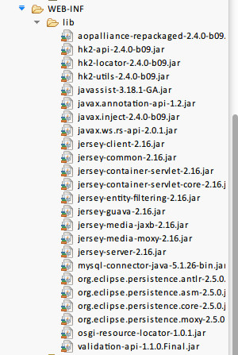

package com.snowalker.bean;
import javax.xml.bind.annotation.XmlRootElement;
@XmlRootElement
public class UserBean {
private int userId;
private String name;
private int age;
public int getUserId() {
return userId;
}
public void setUserId(int userId) {
this.userId = userId;
}
public String getName() {
return name;
}
public void setName(String name) {
this.name = name;
}
public int getAge() {
return age;
}
public void setAge(int age) {
this.age = age;
}
}
package com.snowalker.resource;
import java.util.*;
import javax.websocket.server.PathParam;
import javax.ws.rs.Consumes;
import javax.ws.rs.DELETE;
import javax.ws.rs.GET;
import javax.ws.rs.POST;
import javax.ws.rs.PUT;
import javax.ws.rs.Path;
import javax.ws.rs.Produces;
import javax.ws.rs.core.MediaType;
import com.snowalker.bean.UserBean;
@Path("users")
public class UserResource {
private static Map<Integer,UserBean> userMap = new HashMap<Integer,UserBean>();
/**
* 增加
* @param user
*/
@POST
@Consumes(MediaType.APPLICATION_JSON)
public List<UserBean> createUser(UserBean user)
{
userMap.put(user.getUserId(), user );
return getAllUsers();
}
/**
* 删除
* @param id
*/
@DELETE
@Path("{id}")
public List<UserBean> deleteUser(@PathParam("id")int id){
userMap.remove(id);
return getAllUsers();
}
/**
* 修改
* @param user
*/
@PUT
@Consumes(MediaType.APPLICATION_JSON)
public List<UserBean> updateUser(UserBean user){
userMap.put(user.getUserId(), user );
return getAllUsers();
}
/**
* 根据id查询
* @param id
* @return
*/
@GET
@Path("{id}")
@Produces(MediaType.APPLICATION_JSON)
public UserBean getUserById(@PathParam("id") int id){
UserBean u = userMap.get(id);
return u;
}
/**
* 查询所有
* @return
*/
@GET
@Produces(MediaType.APPLICATION_JSON)
public List<UserBean> getAllUsers(){
List<UserBean> users = new ArrayList<UserBean>();
users.addAll( userMap.values() );
return users;
}
}
@Path，路径信息，表示映射出去的访问路径。
@Path("/myResource")
@Produces，用于限制post和get方法返回的参数类型，支持json、string、xml、html
@Produces({"application/xml", "application/json"})
@Consumes，用于限制输入的参数的类型，支持json、string、xml、html
@Consumes(MediaType.APPLICATION_XML)这里可以以数组形势支持多个参数
@QueryParam，@DefaultValue，通过request传入的参数，@DefaultValue表示默认参数。
@DefaultValue("2") @QueryParam("step") int step,默认为step=2
@QueryParam指在URI的?中传入的参数，如www.xxx.com/user/dept?id=1。那么@QueryParam("id")获取的参数就是id=1
@PathParam 在path路径中传入的参数，如www.xxx.com/user/1。那么@PathParam（“id"）=1
@ FormParam即为通过post传入的参数，比如表单中的数据
@ MatrixParam，@ HeaderParam，@ CookieParam和听从以相同的规则。
@ MatrixParam提取URL路径段的信息。
@ HeaderParam提取的HTTP头信息。
@ CookieParam提取信息的Cookie饼干宣布相关的HTTP标头。
import org.glassfish.jersey.server.ResourceConfig;
public class RestApplication extends ResourceConfig {
/**
* REST主应用
*/
public RestApplication() {
packages("com.snowalker.resource");
}
}
<servlet>
<servlet-name>Jersey Web Application</servlet-name>
<servlet-class>org.glassfish.jersey.servlet.ServletContainer</servlet-class>
<init-param>
<param-name>jersey.config.server.provider.packages</param-name>
<param-value>com.snowalker</param-value>
</init-param>
<load-on-startup>1</load-on-startup>
</servlet>
<servlet-mapping>
<servlet-name>Jersey Web Application</servlet-name>
<url-pattern>/webapi/*</url-pattern>
</servlet-mapping>
http://www.wuwenliang.net/blog/articles/【webservice】RESTfuljavaapi初阶(基于jersey实现).html
我们先增加一个用户对象，使用 JSON 格式：
{
"userId": 1,
"age": 28,
"name": "waylau.com"
}
提示报错：415 未支持媒体格式的错误。
由于我们在新增的接口里面设置的是
@Consumes(MediaType.APPLICATION_JSON)
规定只接收 JSON 格式，而 默认的 “Conten-Type” 是“text/html”所以在还需要在 header 里设置一下 为
“application/json”：

就可以了。我们在添加一个用户对象
{
"userId": 2,
"age": 24,
"name": "www.waylau.com"
}
响应的数据里面就能看到我们的添加的用户了。

修改用户1 的数据：
{
"userId": 1,
"age": 24,
"name": "小柳哥"
}
用 PUT 请求：

在返回的数据里面可以看到用户1 被修改
在根据 ID 查询的接口里面
@GET
@Path("{id}")
@Produces(MediaType.APPLICATION_JSON)
public UserBean getUserById(@PathParam("id") int id){
UserBean u = userMap.get(id);
return u;
}
@Path("{id}")指 id 这个子路径是一个变量。我们查询用户1 时，要将用户 1 的 userId 放在请求的URI 里面http://localhost:8080/webapi/users/1

与上面类似，也是用到了@Path("{id}")

我们看到用户1被删除了。
自此整个应用完成了。我们就实现了基本的CURD操作。